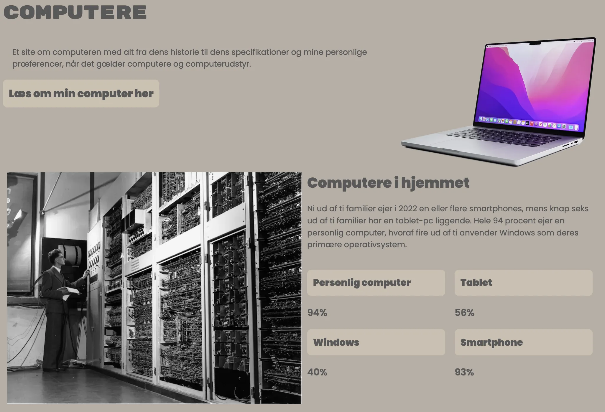

02

web
Temaet og dens process
Mit første tema på multimedieuddannelsen handlede om grundlæggende webudvikling.
Det var min introduktion til at arbejde med opbygning af layouts med grid og designe med CSS.
Temaet gav mig et godt indblik i, hvor vigtigt det er at planlægge designprocessen grundigt. Jeg lærte blandt andet, at værktøjer som moodboards og styletiles i Figma kan gøre en stor
forskel i at skabe en sammenhængende visuel retning. Selvom det var udfordrende at finde ud af, hvordan designet skulle bygges op, og jeg havde brug for meget hjælp undervejs, var det en
lærerig oplevelse, der gav mig de første grundsten til at arbejde med webdesign.
Vigtigste læringsprocesser
- Introduktion til kodning med HTML og CSS.
- At bruge grid til at opbygge et site.
- Sidestruktur og gestaltlove.
- Forståelse for valg af fonte og farver.
- Forståelse for stiltyper.
